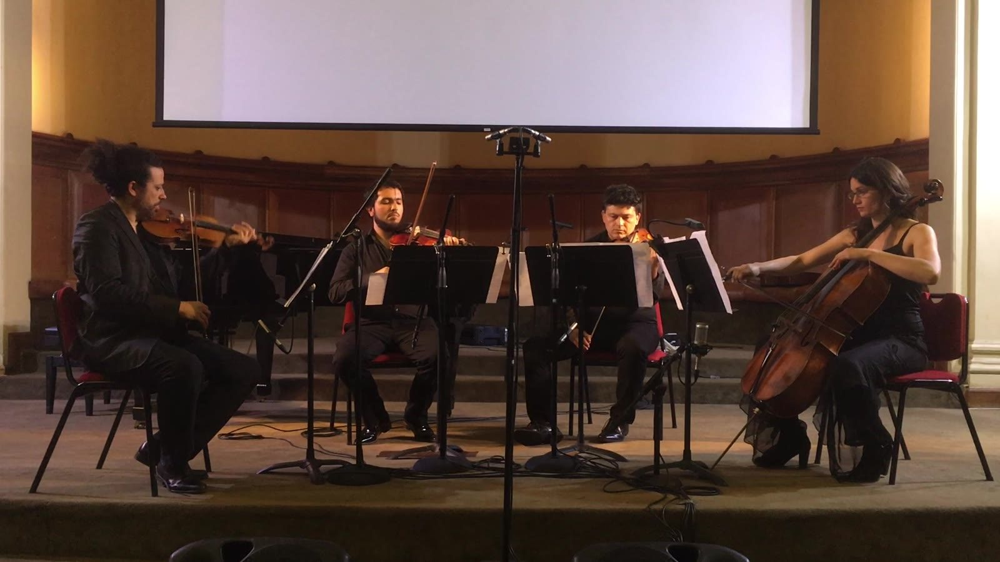
CatalogueCatálogo
Duos, trios, quartets and mixed ensembles, with and without electronicsDúos, tríos, cuartetos y conjuntos mixtos, con y sin electrónica
Duos, trios, quartets and mixed ensembles, with and without electronics, from 1996 to today.
Dúos, tríos, cuartetos y conjuntos mixtos, con y sin electrónica, de 1996 a hoy.
← → · Esc← → · Esc
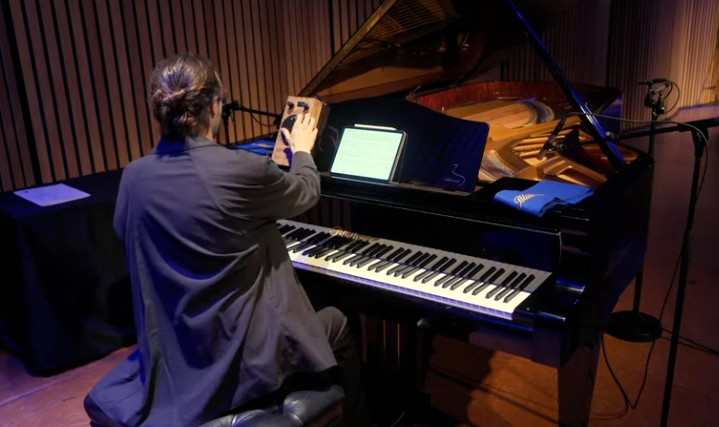
Chamber musicMúsica de cámara
Two pianos and ring modulatorsDos pianos y moduladores en Anillo · 2025 · 25:00
Chirality: a form and its mirror image, which cannot be superimposed on itQuiralidad: una forma y su imagen especular no superponible
Chiral is a work in twelve movements for two pianos and two ring modulators. Chirality, the property of a form that cannot be superimposed on its mirror image, as a left hand cannot be superimposed on a right hand, is its compositional premise.
The electronic setup follows the one Stockhausen devised for Mantra (1970), in which the sound of each piano passes through its own ring modulator. The modulators were designed and built at UC by a research team led by the composer from the study of the MODUL 69 B built for Mantra: analog processing with precise digital control, portable and reproducible. The research, with Tomás Koljatic, Michel Rozas, Cristián Garcés and Juan Parra Cancino, was presented at the International Computer Music Conference 2024 in Seoul and at the IRCAM Forum 2025 in Paris; the piece would not exist without it.
Each of the twelve movements has its own pair of modulation frequencies, one for each piano, stored as a preset that each pianist selects on the modulator before the movement begins. The frequencies range from about 8 Hz, below the threshold of pitch, to above 8 kHz. Microphones on each piano feed its modulator. A Max patch with the same frequencies can replace the hardware.
The composition of the work and the design and construction of the modulators were funded by an ArteCiH grant from the Dirección de Artes y Cultura, Vicerrectoría de Investigación, Pontificia Universidad Católica de Chile.
Chiral es una obra en doce movimientos para dos pianos y dos moduladores en anillo. La quiralidad, propiedad de una forma que no puede superponerse a su imagen especular, como una mano izquierda no puede superponerse a una derecha, es su premisa compositiva.
La electrónica sigue el dispositivo que Stockhausen concibió para Mantra (1970), en que el sonido de cada piano pasa por su propio modulador en anillo. Los moduladores fueron diseñados y construidos en la UC por un equipo de investigación dirigido por el compositor a partir del estudio del MODUL 69 B construido para Mantra: procesamiento analógico con control digital preciso, portátil y reproducible. La investigación, junto a Tomás Koljatic, Michel Rozas, Cristián Garcés y Juan Parra Cancino, se presentó en la International Computer Music Conference 2024 en Seúl y en el IRCAM Forum 2025 en París; la obra no existiría sin ella.
Cada uno de los doce movimientos tiene su propio par de frecuencias de modulación, una para cada piano, guardado como un preset que cada pianista selecciona en su modulador antes de comenzar el movimiento. Las frecuencias van desde unos 8 Hz, bajo el umbral de la altura, hasta más de 8 kHz. Micrófonos en cada piano alimentan su modulador. Un patch de Max con las mismas frecuencias puede reemplazar el hardware.
La composición de la obra y el diseño y la construcción de los moduladores fueron financiados por un fondo ArteCiH de la Dirección de Artes y Cultura, Vicerrectoría de Investigación, Pontificia Universidad Católica de Chile.
Chamber musicMúsica de cámara
Violin and two violas da gambaViolín y dos violas da gamba · 2023 · 08:00
Chamber musicMúsica de cámara
Early music ensambleEnsemble de música antigua · 2022 · 15:00
Chamber musicMúsica de cámara
String quartet and computer musicCuarteto de cuerdas y música computacional · 2017 · 12:52
Contracción I belongs to the series of works entitled Contracción, all derived from the earlier work Extensiones (2010), for solo percussion, orchestra and live electronics, which in turn derives from Tensiones (2008). Here the material is contracted to a string quartet. As in the other works of the series, the sound material derives from the infinity series proposed by the Danish composer Per Nørgård in 1959. The live electronics are an improvising agent: Somax, an artificial intelligence improvisation system developed at IRCAM, listens to the quartet in real time and improvises in response, so that the written music for the quartet meets an electronic part that is never the same twice.
Contracción I pertenece a la serie de obras titulada Contracción, todas derivadas de la obra anterior Extensiones (2010), para percusión solista, orquesta y electrónica en vivo, que a su vez deriva de Tensiones (2008). Aquí el material se contrae a un cuarteto de cuerdas. Como en las demás obras de la serie, el material sonoro deriva de la serie infinita propuesta por el compositor danés Per Nørgård en 1959. La electrónica en vivo es un agente de improvisación: Somax, un sistema de improvisación con inteligencia artificial desarrollado en el IRCAM, escucha al cuarteto en tiempo real e improvisa en respuesta, de modo que la música escrita para el cuarteto se encuentra con una parte electrónica que nunca es igual dos veces.
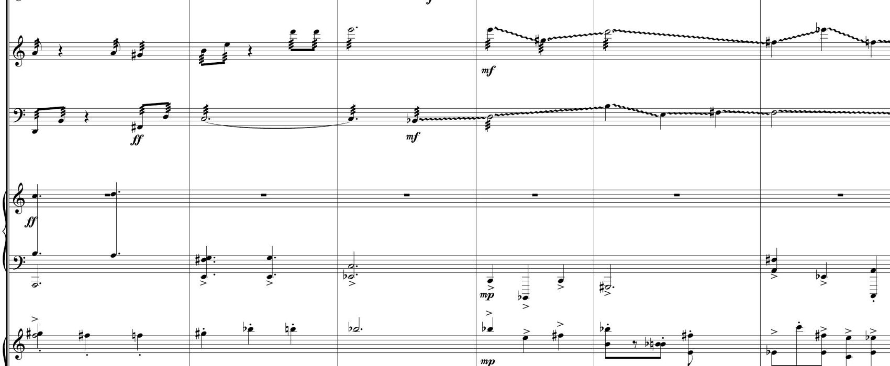
Chamber musicMúsica de cámara
Flute, violin, violoncello, piano and vibraphoneFlauta, violín, violoncello, piano, vibráfono · 2017 · 7:43
Pedesis: the random walk of particles suspended in a fluid: Brownian motionPedesis: el paseo aleatorio de partículas suspendidas en un fluido: movimiento browniano
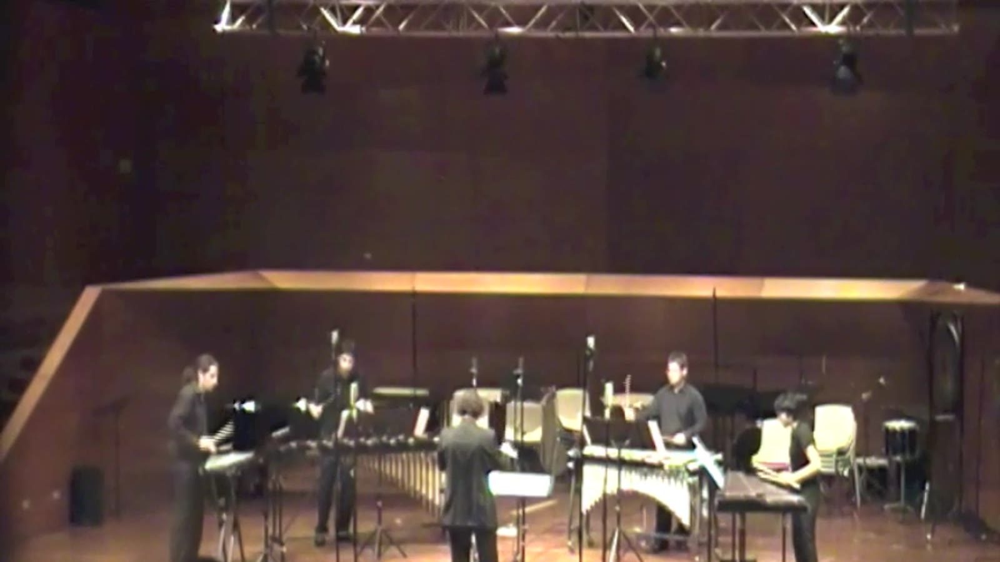
Chamber musicMúsica de cámara
Glockenspiel, xylophone, vibraphone and marimbaGlockenspiel, xilófono, vibráfono, marimba · 2010
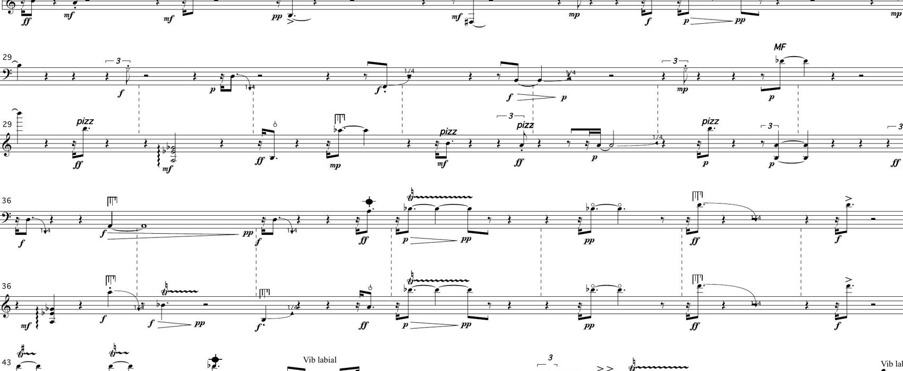
Chamber musicMúsica de cámara
Paetzold recorder and guitarFlauta dulce paetzold y guitarra · 2008 · 7:19
Mutaciones was composed from a source musical material that was modified using several filtering procedures in order to generate versions or "mutations". Part of the material is altered by each transparency and the rest remains unmodified. The filtering takes place in all aspects of the music: pitches, durations, dynamics, articulations and timbre. This source material was also used in my 2002 piece TransParenCias, chamber ensamble.
Mutaciones fue compuesta a partir de un material musical de origen que fue modificado mediante distintos procedimientos de filtrado para generar versiones o "mutaciones". Parte del material es alterado por cada transparencia y el resto permanece sin modificar. El filtrado ocurre en todos los aspectos de la música: alturas, duraciones, dinámicas, articulaciones y timbre. Este mismo material de origen fue usado en mi obra TransParenCias (2002), para ensemble de cámara.
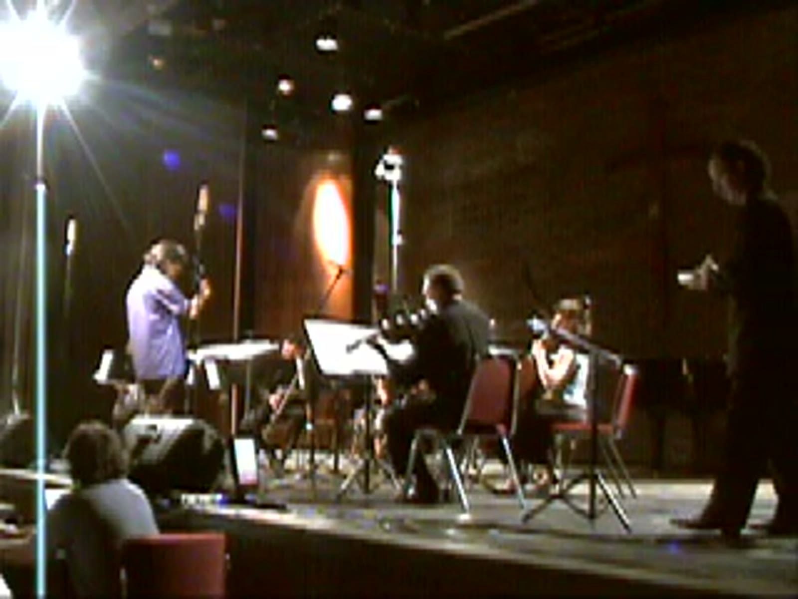
Chamber musicMúsica de cámara
Violin, flute, clarinet, cello, guitar, contrabass recorder and electronicsViolín, flauta, clarinete, violoncello, guitarra, flauta dulce contrabaja y electrónica · 2008 · 13:19
Tensiones is a piece for virtual percussion soloist, computer and ensemble. This work seeks to explore and challenge the notion of the traditional soloist and his relationship with the ensemble through the use of technology in several ways.
The soloist does not only interpret his part, but also affects in real time the sound produced by the ensemble. In addition, the soloist does not perform a real instrument, but instead generates computer produced sounds by manipulating two wireless gesture sensors. Thus, he performs a virtual instrument and not a real one.
In traditional music written for soloist and ensemble, there is usually a dialog between the solo performance and the ensemble. In general, the soloist does not affect or alter the sonic output of the ensemble. It is often the case that the soloist carries out the most important part or melody of the music and the ensemble assumes an accompaniment role.
In this work I seek to emphasize this dominant aspect of the soloist by the use of technology. As the soloist manipulates the wireless sensors he does not only performs the solo part, but also manipulates in real time the sound produced by the ensemble. The soloist can then change and modify the sound of the ensemble as he wishes. He has total control over the entire sound output of the piece.
Another important aspect of the work is the notion of a virtual instrument and of gestuality as a means of generating and controlling sound. Sound is produced by gestures and not digitation. The notion of virtuosism is also questioned, as these gestures manifest themselves as direct sound but also as modified sound.
Finally, an instrument, as defined by this piece, is not merely a sound producing device, but most importantly, a sound shaper and modifier of other instruments' sounds.
Tensiones es una obra para solista virtual de percusión, computador y ensemble. Busca explorar y poner en cuestión la noción tradicional de solista y su relación con el conjunto, mediante distintos usos de la tecnología.
El solista no solo interpreta su parte: también afecta en tiempo real el sonido producido por el ensemble. Además, no ejecuta un instrumento real, sino que genera sonidos por computador manipulando dos sensores de gesto inalámbricos. Toca, por tanto, un instrumento virtual y no uno real.
En la música tradicional escrita para solista y conjunto suele haber un diálogo entre ambos, y en general el solista no afecta ni altera el resultado sonoro del ensemble; lo habitual es que lleve la parte o melodía más importante mientras el conjunto asume un rol de acompañamiento. En esta obra busco enfatizar ese carácter dominante del solista por medio de la tecnología: al manipular los sensores inalámbricos no solo ejecuta su parte, sino que modifica en tiempo real el sonido del conjunto. Tiene control total sobre el resultado sonoro completo de la obra.
Otro aspecto importante es la noción de instrumento virtual y de la gestualidad como medio para generar y controlar el sonido: el sonido se produce por gestos y no por digitación. También se cuestiona la noción de virtuosismo, pues esos gestos se manifiestan tanto como sonido directo cuanto como sonido modificado. Finalmente, un instrumento, según lo define esta pieza, no es solo un dispositivo productor de sonido, sino sobre todo un modelador y modificador del sonido de otros instrumentos.
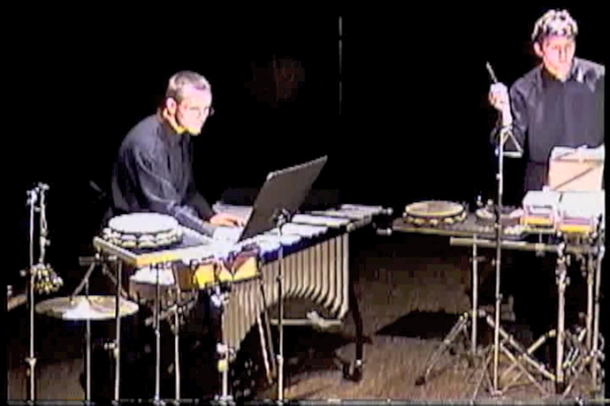
Chamber musicMúsica de cámara
Percussion quartetCuarteto de percusiones · 2003 · 11:16
Erupciones was commissioned by Schlagquartett Köln, a percussion quartet based in Cologne, Germany. This piece is divided in nine sections, and each one explores the possibilities of different subsets of the chosen restricted set of instruments, most of them unpitched. Erupciones was premiered on January 2004 by Schlagquartett Köln, in the "Pulsos del Sur" concert, organized by the Chilean composer Ramón Gorigoitía. I was able to attend the premiere of Erupciones thanks to a grant from the Wyatt Fund for student composers of the School of Music of Northwestern University. This piece also received the first prize in the Union League Civic and Arts Foundation composition competition in 2004, together with TransParenCias. Erupciones received its Chilean premiere in November 2007 by Cuarteto de Percusiones UC at the XVII Chilean Contemporary Music Festival.
Erupciones fue un encargo del Schlagquartett Köln, cuarteto de percusión con sede en Colonia, Alemania. La obra se divide en nueve secciones, y cada una explora las posibilidades de distintos subconjuntos de un set restringido de instrumentos, la mayoría de altura indeterminada.
Fue estrenada en enero de 2004 por el Schlagquartett Köln en el concierto "Pulsos del Sur", organizado por el compositor chileno Ramón Gorigoitía. Pude asistir al estreno gracias a una beca del Wyatt Fund para compositores de la School of Music de Northwestern University. La obra recibió además el primer premio del concurso de composición de la Union League Civic and Arts Foundation en 2004, junto a TransParenCias. Su estreno chileno estuvo a cargo del Cuarteto de Percusiones UC en noviembre de 2007, en el XVII Festival de Música Contemporánea Chilena.
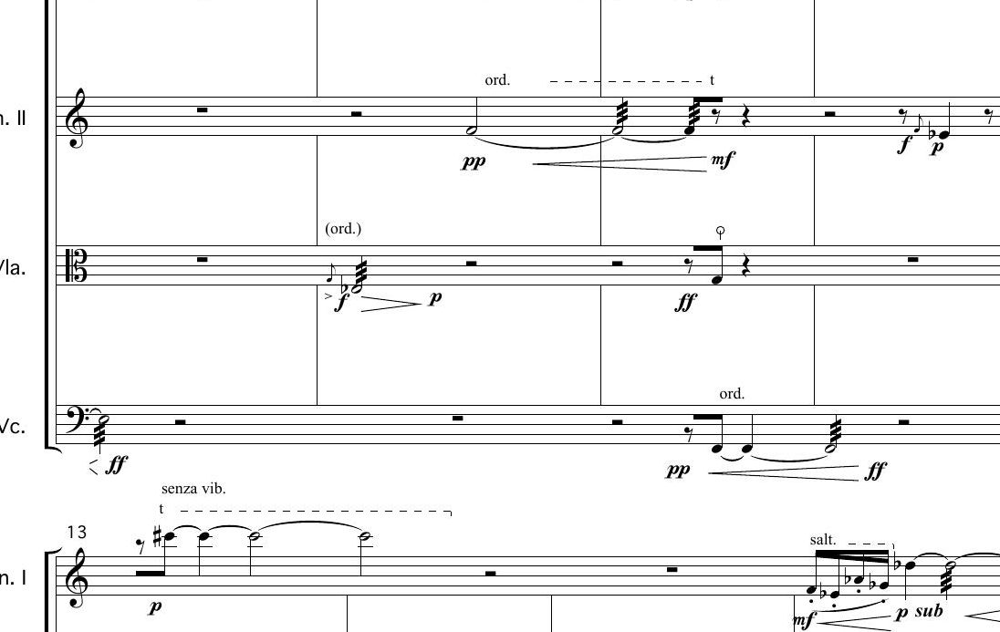
Chamber musicMúsica de cámara
String quartetCuarteto de cuerdas · 2002 · 6:34
Arquesting explores a traditional instrumental configuration, the string quartet, from a new perspective. The typical predominant role of the first violin is negated by the equal treatment of the four integrants of the quartet. In Arquesting, no instrument is more important than the other and each one participates in the structural discourse of the piece. Arquesting explores the relation of two different modes of articulation, the bowed and plucked string, by integrating both in the driving force of the piece. Arquesting was premiered by the Contemporary Music Ensemble of Northwestern University on October, 2002 at the Regenstein Concert Hall in Evanston, Illinois, USA. The Chilean premiere took place with occasion of the VII International Contemporary Music Festival of the University of Chile, in January 2007.
Arquesting explora una configuración instrumental tradicional, el cuarteto de cuerdas, desde una perspectiva nueva. El habitual papel predominante del primer violín queda negado por el tratamiento igualitario de los cuatro integrantes del cuarteto: ningún instrumento es más importante que otro y cada uno participa del discurso estructural de la obra. Arquesting explora además la relación entre dos modos de articulación distintos, la cuerda frotada y la pulsada, integrando ambos como fuerza motriz de la pieza.
Fue estrenada por el Contemporary Music Ensemble de Northwestern University en octubre de 2002, en la Regenstein Concert Hall de Evanston, Illinois. El estreno chileno tuvo lugar en el VII Festival Internacional de Música Contemporánea de la Universidad de Chile, en enero de 2007.
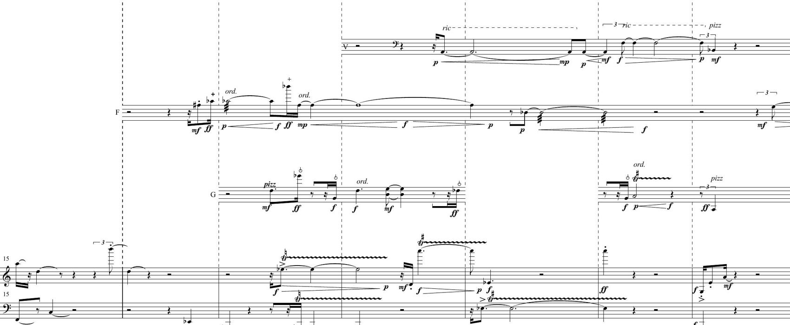
Chamber musicMúsica de cámara
Soprano, flute, violin, guitar and puanoSoprano, flauta dulce, violín, guitarra y piano · 2002 · 9:39
TransParenCias was composed from a source musical material that was modified using several filtering procedures in order to generate five versions or "transparencies". Part of the material is altered by each transparency and the rest remains unmodified. The filtering takes place in all aspects of the music: pitches, durations, dynamics, articulations and timbre. This source material was also used in my 2008 piece Mutaciones, for Paetzold recorder and guitar. TransParenCias was commissioned in 2002 by Taller de Música Contemporánea UC, conducted by Pablo Aranda. In 2004, TransParenCias obtained the first composition prize at the Annual Music Composition Competition of the Union League Civic and Arts Foundation, in Chicago, Illinois, USA, together with Erupciones.
TransParenCias fue compuesta a partir de un material musical de origen que fue modificado mediante distintos procedimientos de filtrado para generar cinco versiones o "transparencias". Parte del material es alterado por cada transparencia y el resto permanece sin modificar. El filtrado ocurre en todos los aspectos de la música: alturas, duraciones, dinámicas, articulaciones y timbre. Este mismo material de origen fue usado en mi obra Mutaciones (2008), para flauta dulce Paetzold y guitarra.
TransParenCias fue un encargo del Taller de Música Contemporánea UC, dirigido por Pablo Aranda, en 2002. En 2004 obtuvo el primer premio de composición del concurso anual de la Union League Civic and Arts Foundation, en Chicago, junto a Erupciones.
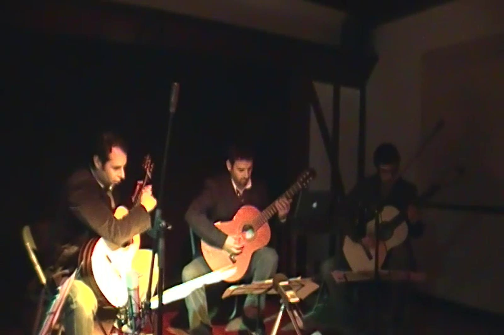
Chamber musicMúsica de cámara
Guitar trio and tapeTrío de guitarras y electrónica · 2001 · 6:32
G-3 was commissioned by Trío del Sur, integrated by guitarists Luis Castro, Diego Castro and Edel Muñoz. Besides the guitar trio, prerecorded and computer processed guitar sounds were used in this composition. The piece is based on sequences of prime numbers and explores different kinds of guitar noises as sound materials. In "G-3", the acoustic sounds of the three guitars interact with both prerecorded guitar sounds and processed ones as well in some cases. This work uses what it could be catalogued as instrumental "noises" and not notes in the normal sense. The audible context has nothing to do with what is traditionally expected from a guitar trio. The overall idea of this work is to unfold the diverse elements through a gradual interchange between the acoustic instruments and the digital recording. This piece was released on the CD "Poliedro" in 2001.
G-3 fue un encargo del Trío del Sur, integrado por los guitarristas Luis Castro, Diego Castro y Edel Muñoz. Además del trío de guitarras, la obra emplea sonidos de guitarra pregrabados y procesados por computador. La pieza se basa en secuencias de números primos y explora distintos tipos de ruidos guitarrísticos como material sonoro.
En G-3 los sonidos acústicos de las tres guitarras interactúan con los sonidos pregrabados y, en algunos casos, procesados. La obra usa lo que podría catalogarse como "ruidos" instrumentales más que notas en el sentido habitual: el contexto audible poco tiene que ver con lo que tradicionalmente se espera de un trío de guitarras. La idea general es desplegar los diversos elementos mediante un intercambio gradual entre los instrumentos acústicos y la grabación digital. La obra fue editada en el CD "Poliedro" en 2001.
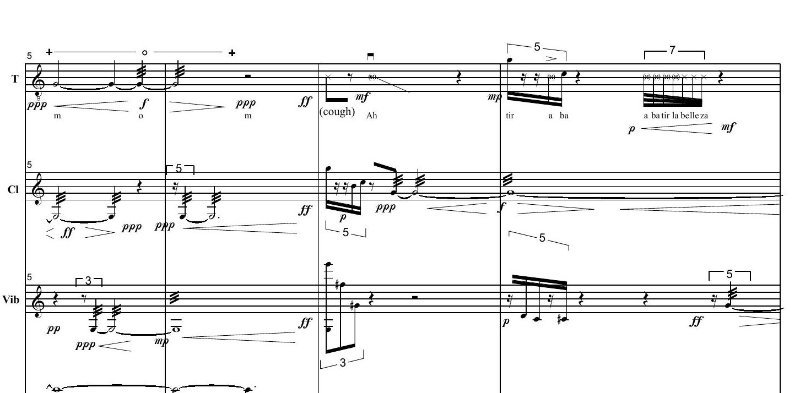
Chamber musicMúsica de cámara
Tenor, clarinet, vibraphone and contrabassTenor, clarinete, vibrafono y contrabajo · 1999 · 6:38
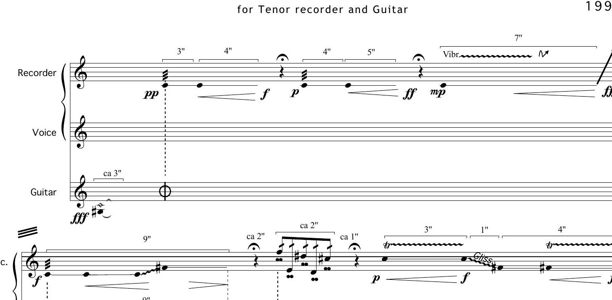
Chamber musicMúsica de cámara
Recorder and guitarFlauta dulce y guitarra · 1998 · 5:56
Atracciones was especially written for the musicians Carmen Troncoso and Luis Castro (Duo Divertimento), who premiered it on October 1998 at the Multisala Arena in Santiago, Chile. Its title describes the overall spirit of the piece. All musical events of one instrument influence the behavior of the other in different ways, creating zones of attraction and others of rejection. The materials of the recorder and the guitar are quite different, but they mutually interact and complement each other as the piece progresses. This work also includes a controlled improvisation section, a technique that I have not used much in my artistic output.
Atracciones fue escrita especialmente para los músicos Carmen Troncoso y Luis Castro (Dúo Divertimento), quienes la estrenaron en octubre de 1998 en la Multisala Arena de Santiago. Su título describe el espíritu general de la obra: todos los eventos musicales de un instrumento influyen sobre el comportamiento del otro de distintas maneras, creando zonas de atracción y zonas de rechazo. Los materiales de la flauta dulce y de la guitarra son bastante distintos, pero interactúan y se complementan mutuamente a medida que la obra avanza. La pieza incluye también una sección de improvisación controlada, técnica que he usado poco en mi producción.
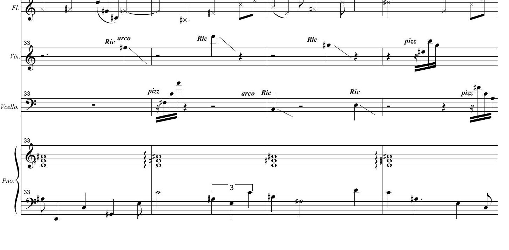
Chamber musicMúsica de cámara
Violin, flute, viloncello and pianoViolín, flauta, violoncello y piano · 1998 · 4:56
Interference: waves that add and cancelInterferencia: ondas que se suman y se cancelan
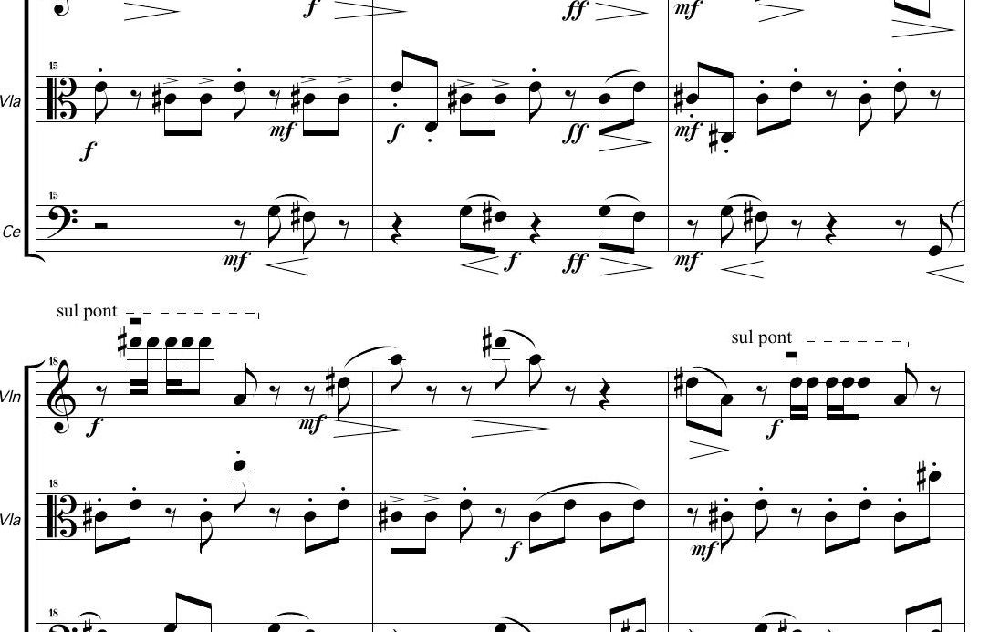
Chamber musicMúsica de cámara
Violin, viola and violoncelloViolín, viola y violoncello · 1997 · 7:12
Trío is one of the first pieces I composed. It is divided in three parts. The first part uses only six notes, which are assigned in pairs to the three string instruments. An initial minor third motive gives birth to the material of the whole section. The second part starts with a violin solo that begins with a note that does not belong to the first group of six. After the solo, chords of sul ponticello string are presented, giving birth to the harmonic material of the third part. The last section uses pizzicati as its main articulative discourse and harmonically uses the complementary six note set. The piece ends with the same density and motivic materials as the beginning of the piece, but with a transposed harmony. Trio was premiered on November of 1997 at the VII Chilean Contemporary Music Festival, organized by the Music Institute of the Pontificia Universidad Católica de Chile, in Santiago, Chile.
Trío es una de las primeras obras que compuse. Está dividida en tres partes. La primera usa solo seis notas, asignadas de a pares a los tres instrumentos de cuerda; un motivo inicial de tercera menor da origen al material de toda la sección. La segunda parte comienza con un solo de violín que parte con una nota ajena a ese primer grupo de seis; tras el solo aparecen acordes de cuerda sul ponticello que dan origen al material armónico de la tercera parte. La última sección usa los pizzicati como principal discurso articulatorio y, armónicamente, el conjunto complementario de seis notas. La obra termina con la misma densidad y los mismos materiales motívicos del comienzo, pero con la armonía transpuesta.
Trío fue estrenada en noviembre de 1997 en el VII Festival de Música Contemporánea Chilena, organizado por el Instituto de Música de la Pontificia Universidad Católica de Chile.